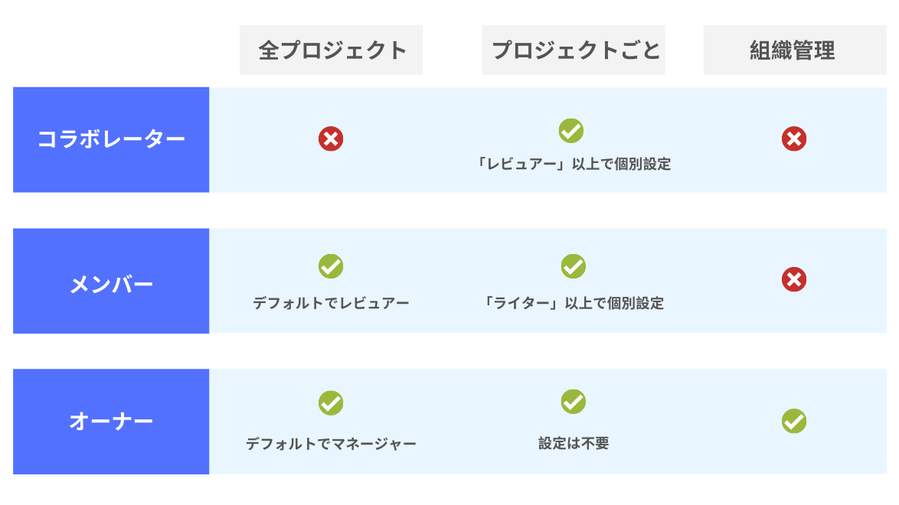

組織に招待するメンバーの権限管理¶
組織に新しいメンバーを招待して、コラボレーションを通した記事の執筆をしましょう！
Shodoではメンバーのロール（役割）を設定して、アカウントの役割やできることを管理できます。 さらに、プロジェクトごとにアクセス権も個別に設定できます。
メンバーの種類¶
プロジェクトのメンバーには3種類のロールがあります。
オーナー：組織の管理をする人
メンバー：記事のレビュー・執筆をする組織に属する人
コラボレーター：組織の外部の人で、執筆などを手伝ってくれる人
それぞれのロールごとに、組織内でできることが違います。 同じ会社やチームに属する人であれば「メンバー」で招待するのが良いでしょう。
組織内でのできることの違い¶
コラボレーターは、デフォルトで どのプロジェクトにも参加していない 点で大きく違います。 コラボレーターを組織に招待したときは、プロジェクトごとにアクセス権を付与する必要があります。
メンバーは、デフォルトですべてのプロジェクトに対して「レビュアー」としての権限を持ちます。

プロジェクトごとの権限については以下で説明します。
プロジェクトごとに、できることを管理しよう¶
Shodoでは、それぞれのプロジェクトごとにアカウントのロールを設定できます。 組織内のロールは「どういった所属の人か」を設定しますが、プロジェクトごとでは「何をする人か」を設定できます。
マネージャー：プロジェクトの管理をする人
ライター：プロジェクト内で記事の執筆、タスクの管理ができる人
レビュアー：プロジェクト内で記事のレビューやコメントのみできる人

社内で記事を執筆してくれる人がいれば、「ライター」に設定しましょう。 記事を読んでレビューだけをしてほしい場合は「レビュアー」に設定します。 レビュアーの場合、記事の執筆をしたり他の人に記事のレビューを依頼することはできません。
組織の「メンバー」はデフォルトで全プロジェクトに「レビュアー」権を持ちます。
権限管理、こんなときはどうする？¶
Shodoの権限管理はとても柔軟な反面、少しわかりにくい場合があるかもしれません。 以下に「こんな場合はどう権限管理するか」というよくある例を紹介しておりますので、参考にしてください。
社内の人にブログをレビューしてほしい¶
社内の人にレビューを依頼する場合は、その人を「メンバー」として組織に招待しましょう。 組織に属する「メンバー」のアカウントはすべてのプロジェクトにアクセスできるので、プロジェクトごとの設定は不要です。
組織に追加後に、執筆タスクの「レビュアー」に設定すると良いでしょう。
原稿の執筆で外部のレビュアーを招きたい¶
あるプロジェクトで寄稿文の原稿を書いているとして、そこにレビュアーを招きたい場合は「コラボレーター」として組織に招待しましょう。 コラボレーターとして招待したあとに、当該のプロジェクトに「レビュアー」としてアクセス権を付与しましょう。
外部のライターを招きたい¶
執筆を外部の方に依頼する場合は、ライターの方を「コラボレーター」として組織に招待しましょう。 執筆を依頼したいプロジェクトに「ライター」としてアクセス権を付与しましょう。
特定の執筆タスクだけを、特定の人に依頼したい¶
Shodoでは現在、「執筆タスク」という単位で権限を管理することはできません。 Shodoでは「プロジェクト」という単位で、ライターやレビュアーといった権限が決まります。
もし社内やチームの既存のタスクや記事を読ませたくない場合は、 別のプロジェクトを作りましょう 。 たとえば外部の方とインタビューした場合であれば、「interview-2008」という専用のプロジェクトを作りましょう。
外部の方を「コラボレーター」として組織に追加し、「レビュアー」としてプロジェクトにアクセス権を追加します。 すでに組織に所属する「メンバー」を、「ライター」としてプロジェクトに追加して記事の執筆を依頼できます。
このとき「interview-2008」プロジェクトには専用のSlack連携を設定できるので、外部のインタビュイーの方を招待したSlackのチャンネルと連携されると良いでしょう。